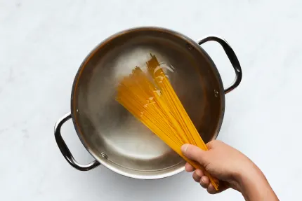
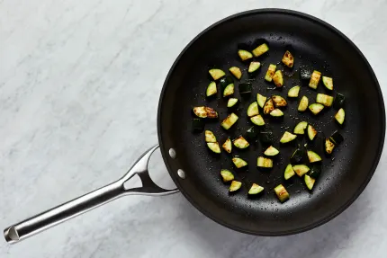

Visuals
 

"Love chicken alfredo? Then you’ll adore this dreamy dish. It’s a sophisticated riff on the classic with tons more flavor infused into every bite. There’s Italian-spiced chicken, tender zucchini, and al dente spaghetti all coated in a creamy, cheesy, lemon-spiked sauce. It’s hearty, yet light, and guaranteed to put a smile on any pasta-lover’s face." - HelloFresh
Recipe Source
This website has multiple levels, so there are many links and hyperlinks to different pages that might be referenced. There's a social aspect of showing user reviews/ratings and a how-to video by the poster. However, there are a lot of popups and different elements that can make the screen feel cluttered and the experience less user-friendly.
Food NetworkIt doesn't adapt very well to change in window size. The video is optional to view, so it doesn't immediately start playing and crowd the user. The layout of the actual ingredients and instructions is very clean and simple to navigate. There are many icons used that make navigating buttons and links easier.
YummlyThumbnail image displaying food item is close-up but not as visually-appealing as other websites, quality of images is also varied. The only thing immediately displayed on the recipe page is the recipe name, ratings, quick stats, and ingredients. Instead of immediately displaying instructions, there a button to "read directions", which leaves the screen feeling less crowded, but it personally took me longer to realize. There are more nutrition facts displayed than the usual recipe website.